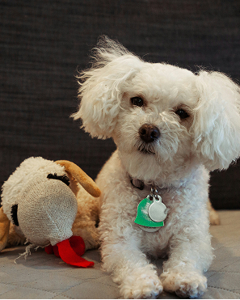
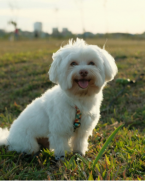
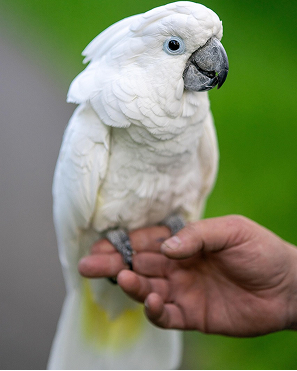
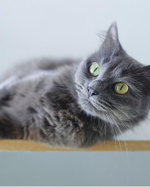
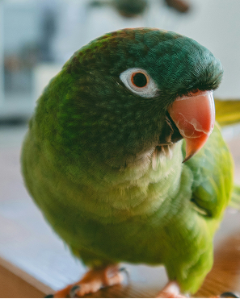

팝업
찾습니다
가족을 찾습니다
-
실종
믹스 푸들 암컷
- 실종장소 서울특별시 마포구 월드컵공원서울특별시 마포구 월드컵공원
- 실종날짜 2025-05-09
- 특이사항 흰색 곱슬 배쪽에 점있음
-
종료
말티즈 수컷 말티즈 수컷 말티즈 수컷
- 실종장소 경기도 수원시 스타벅스 근처경기도 수원시 스타벅스 근처...
- 실종날짜 2025-05-20
- 특이사항 미용한지 얼마 안지나 털이 짧음
-
실종
코카투 수컷
- 실종장소 경기도 파주시 경의선숲길 대흥경기도 파주시 경의선숲길 대흥
- 실종날짜 025-05-06
- 특이사항 꼬리 안쪽에 노란색 털 있음
-
종료
러시안 블루 암컷
- 실종장소 대구광역시 중구 국채보상공 GS주변에서 사라졌음
- 실종날짜 2025-05-06
- 특이사항 흰털이 조금 있음. 사람에게 친근하게 잘 다가가는 애교냥이
주인을 찾습니다
-
목격
숏 헤어 암컷 1살
- 실종장소 대구광역시 달성군 서재보성타대구광역시 달성군 서재보성타
- 실종날짜 2025-05-22
- 특이사항 꼬리가 꺽여 있음
-
종료
요크셔테리어 암컷요크셔테리어 암컷
- 실종장소 전라북도 김제시 죽산면 명마마을
- 실종날짜 2025-05-18
- 특이사항 갈색털과 회색털이 섞여있음
-
구조
뉴기니아 수컷2살
- 실종장소 서울특별시 서대문구 남가좌동서울특별시 서대문구 남가좌동
- 실종날짜 2025-05-06
- 특이사항 부리가 금이 가져있음. 사람을 좋아함
-
목격
비글 암컷 4살추정
- 실종장소 대구광역시 중구 국채보상공 GS대구광역시 중구 국채보상공 GS
- 실종날짜 2025-05-01
- 특이사항 사람을 좋아함. 미간에 주름 있음
구조동물 발견 시 대처요령
공공장소공원에서 주인 없이 떠도는
동물동물을 발견한 경우
관할 시군구청 또는 동물보호센터건물에
신고전화하시기 바랍니다.
※ 소유자를 알 수 없는 동물을 신고하지 않고 알선·구매하는 경우, 포획하여 팔거나 판매하거나 죽일 목적으로 포획하는 경우에는 동물보호법 제10조제3항제1호·제3호·제4호를 위반하여 2년 이하 징역이나 2천만원 이하 벌금이 부과됩니다.